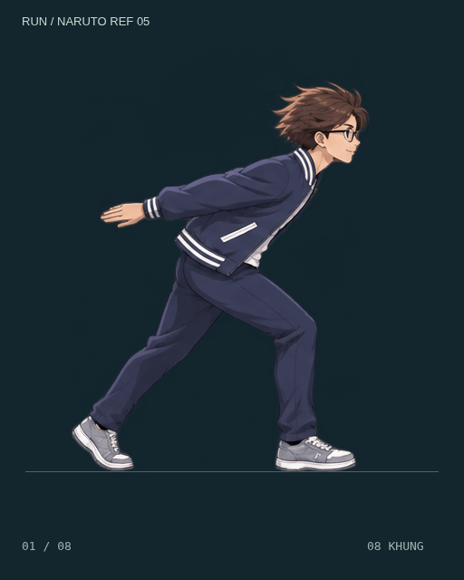
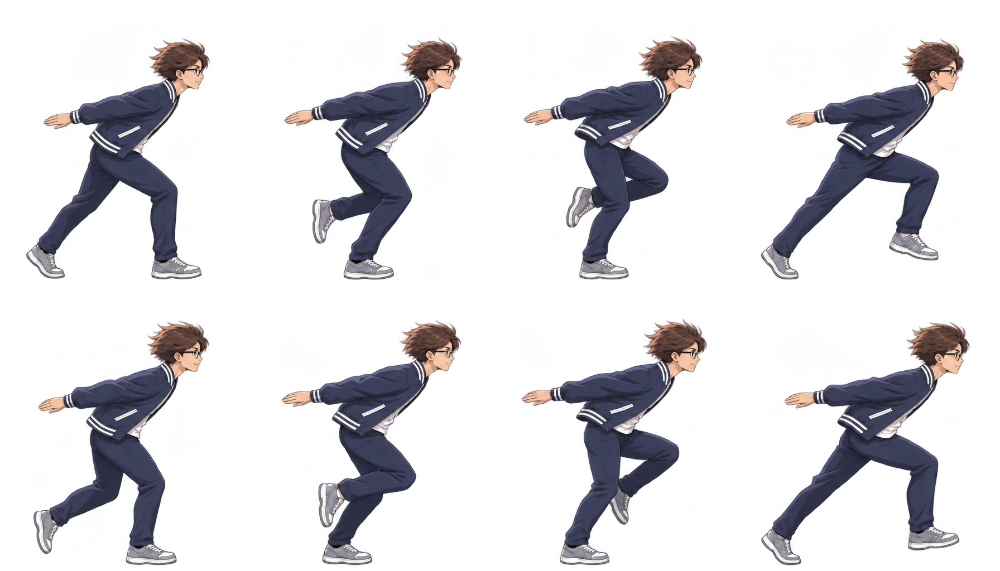

DỊ MÔN / NINJA RUN NARUTO REFERENCE 05
Ninja run — tham chiếu Naruto.
Bản thử dựa trên hai đoạn Naruto chạy bên dưới. Tay giữ dài về sau hơn, giảm độ gập khuỷu; giữ nhân vật của dự án, hướng chạy sang phải và chân bám sàn.

Tham chiếu chuyển động


Đối chiếu GIF bản 04

Spritesheet 4 × 2
